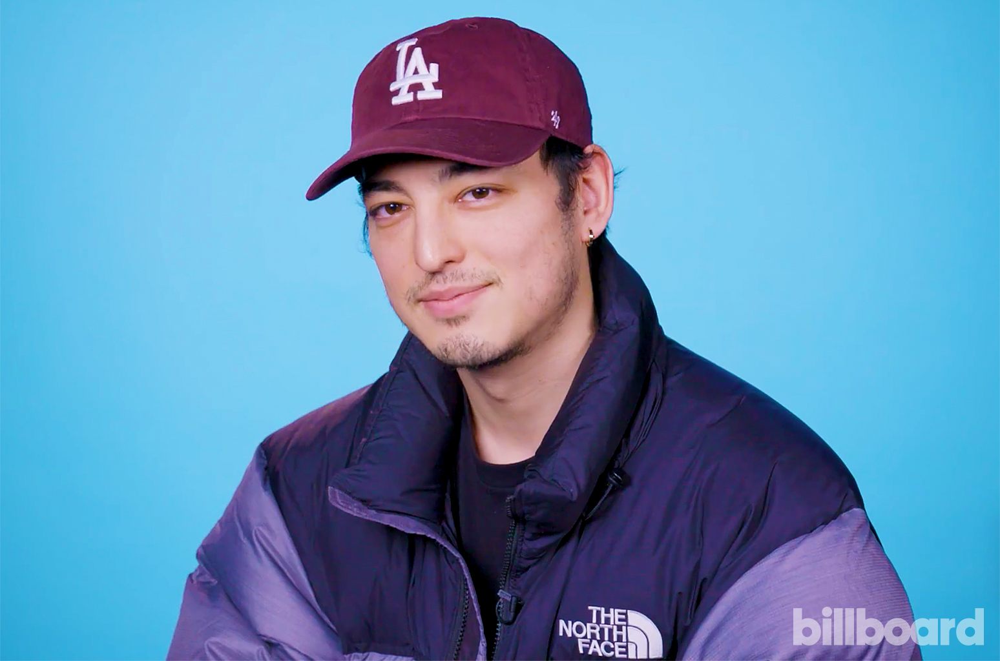
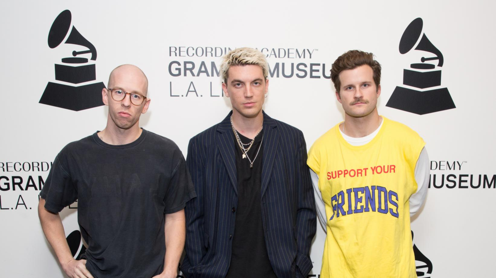

No Rome
Guendoline Rome Viray Gomez, better known by his stage name No Rome, is a London-based Filipino musician. Gomez grew up in Manila before settling in London. He is currently signed to Dirty Hit. The dreamy track “Do It Again” off No Rome’s new EP RIP Indo Hisashi is one of the four songs listed which includes “Seventeen,” “Saint Laurent,” and “Narcissist” featuring no less than Dirty Hit label mates The 1975—one of today’s most recognizable and chart-topping pop-alternative bands. The 1975’s Matty Healy and George Daniel co-produced “Do It Again.”

Joji
George Kusunoki Miller (born 18 September 1992), better known by his stage name Joji and formerly by his online aliases Filthy Frank and Pink Guy, is a Japanese singer, songwriter, rapper, record producer, author, and former Internet personality and comedian.Miller's start as an entertainer began on his now defunct YouTube channels, DizastaMusic, TooDamnFilthy, and TVFilthyFrank, that consisted of rap songs, rants, extreme challenges, ukulele performances and a bizarre show titled The Filthy Frank Show, with most of the main characters played by Miller, including the titular character of Filthy Frank.

Rich Brian
Brian Imanuel Soewarno (born 3 September 1999), known professionally as Rich Brian (formerly Rich Chigga), is an Indonesian rapper, singer, songwriter, and record producer. He is known for his viral debut single "Dat $tick", which was first released in March 2016 on SoundCloud. The single was later certified gold by RIAA. His debut studio album, Amen, was released in February 2018, and peaked at number 18 on the US Billboard 200. Brian's second studio album, The Sailor, was released on 26 July 2019.

Bruno Mars
Peter Gene Hernandez (born October 8, 1985), known professionally as Bruno Mars, is an American singer, songwriter, record producer, multi-instrumentalist, and dancer. He is known for his stage performances, retro showmanship, and for performing in a wide range of musical styles, including Pop, R&B, funk, soul, reggae, hip hop, and rock. Mars is accompanied by his band, The Hooligans, who play a variety of instruments, such as electric guitar, bass, piano, keyboards, drums, and horns, and also serve as backup singers and dancers.

Post Malone
Austin Richard Post (born July 4, 1995), known professionally as Post Malone, is an American rapper, singer, songwriter, and record producer. Known for his introspective songwriting and laconic vocal style, Post has gained acclaim for bending a range of genres including hip hop, pop, country, and rock. He first attained recognition in 2015 following the release of his debut single "White Iverson". He subsequently signed a recording contract with Republic Records.

Ed Sheeran
Edward Christopher Sheeran, MBE (born 17 February 1991) is an English singer, songwriter, record producer, and actor. In early 2011, Sheeran independently released the extended play, No. 5 Collaborations Project. After signing with Asylum Records, his debut album, + (pronounced "plus"), was released in September 2011 and topped the UK Albums Chart. It contained his first hit single "The A Team". In 2012, Sheeran won the Brit Awards for Best British Male Solo Artist and British Breakthrough Act.

Lany
LANY (stylized in all caps, an acronym for "Los Angeles New York") is an American indie pop band from Los Angeles, formed in Nashville in 2014. The band consists of Paul Jason Klein from Tulsa, Oklahoma. Charles Leslie "Les" Priest, and Jake Clifford Goss from Nashville. The members of LANY studied music in college and are multi-instrumentalists. During a trip from L.A. to Nashville, Klein hooked up with Priest and Goss, who were working on their own project, WRLDS. They decided to start something new together and LANY was born. The band's name (pronounced "Lay-nee") is a nod to Los Angeles and New York, marking their desire to spread their music from coast to coast. That music combines the feel of '80s radio pop, '90s R&B soul, and atmospheric synths.

IU
Lee Ji-eun (Korean: 이지은; born May 16, 1993), professionally known as IU, is a South Korean singer-songwriter, producer and actress. While still in middle school, IU auditioned for various talent agencies with ambitions of becoming a singer. She signed with Kakao M (formerly LOEN Entertainment) in 2007 as a trainee and began her music career at the age of 15 with her debut album, Lost and Found. Her follow-up albums, Growing Up and IU, brought her mainstream success, but it was through "Good Day" (Korean: 좋은 날), the lead single from her 2010 album Real, that she achieved national stardom.

Chunga Ha
Kim Chung-ha (Korean: 김청하, born Kim Chan-mi [김찬미]; February 9, 1996), better known mononymously as Chungha (stylized as CHUNG HA), is a South Korean singer, dancer, songwriter, and choreographer. She finished fourth in Mnet's girl group survival show Produce 101, becoming a member of the resulting girl group I.O.I. Following the dissolution of I.O.I in 2017, Chungha debuted as a solo artist with the extended play Hands on Me.
HyunA
Kim Hyun-ah (born June 6, 1992), better known by the mononym Hyuna, is a South Korean singer-songwriter, rapper and model. She debuted as a member of the girl group Wonder Girls in February 2007. After leaving the ensemble shortly after, Hyuna subsequently left JYP Entertainment and joined the girl group 4Minute, under Cube Entertainment. 4Minute debuted in June 2009 and went on to become one of the most popular girl groups in the country.